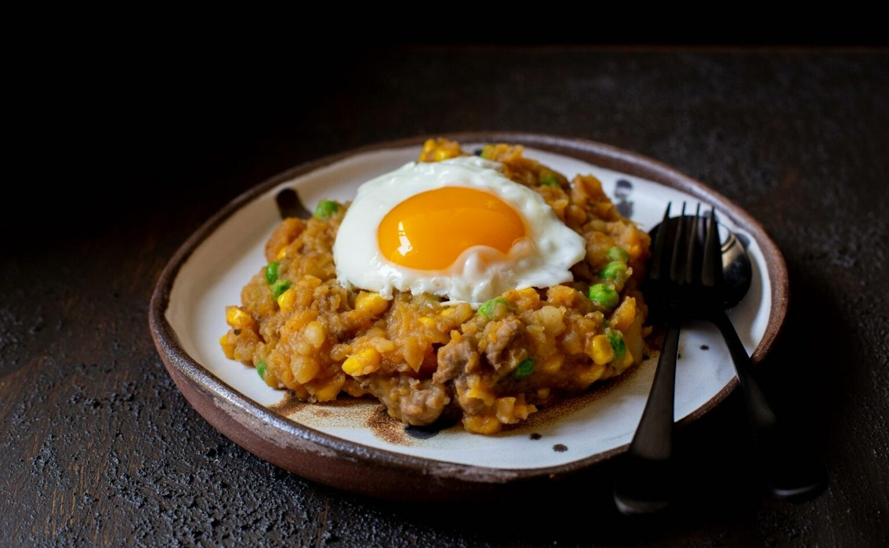

Charquican de mi abuelita

Description
Charquicán is a very seasonal dish in Chile. I mean, if it is summer and in-season green beans, peas, corn are
added. Same with other vegetables. It is still cooked with pumpkin and the always faithful potatoes if it is
winter.
The name derives from the use of jerky in the preparation. Charqui (jerky) is any smoked and dried meat. It
could be horse jerky, beef, or even fish. Before refrigerators were popular, this is how meat was preserved.
Now, it is more common to make it with fresh meat, but the name remains.
Ingredients
- 1 small yellow onion, diced small
- 1 lb ground beef
- 1/2 lb winter squash, peeled and cubed
- 5 red potatos, peeled and cubed
- 1 tsp paprika
- 1/2 tsp dried oregani
- 2 cups vegetable broth
- pinch of cumin
- 1/2 cup each of: corn, green peas or green beans
- salt, pepper, oil
- 6 eggs for the top, optional
Steps
- In oiled skillet on medium heat, cook onion for ~6-8 minutes until soft
- Add the meat and saute for 6 minutes
- Add the squash, potatos, pepper, oregano, cumin, and paprika. Stir in the broth and cook covered for 15 minutes. Reduce heat if needed
- Mash potatos and squas (fork works fine)
- Add the rest of the veggies. Stir and cook for 3-4 minutes until hot
- Fry the eggs if using
- Taste and adjust seasoning if necessary, serve with fried egg on top